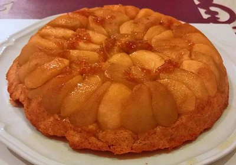
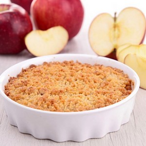
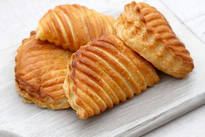
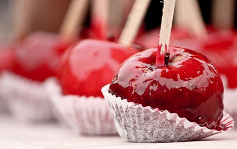
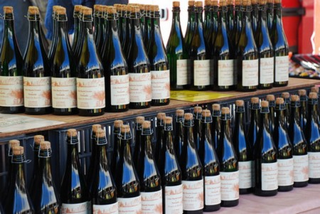

La pomme peut bien évidemment se consommer crue. Cela permet un bon apport d'eau et de vitamine C principalement. Mais il existe d'autres moyens de consommer ce fruit, selon les variétés. Elles ne sont pas toutes destinées à la même utilisation.
Cuisiner avec les pommes
Comme tout les fruits, la pomme est idéale pour cuisiner des desserts de toutes sortes :
Tarte au pommes, notamment la Tarte Tatin, pour les pommes sucrées qui résistent à la cuisson. Exemple: Golden, la Canada Tarte Tatin, dessert inventé en 1926 à Paris
Gâteaux aux pommes, notamment le Crumble, pour les pommes supportant la cuisson au four. Exemple : La Chanteclerc Crumble, un gâteau britannique créé pendant la Seconde Guerre mondiale afin de faire des économies de farine.
Des pâtisseries, comme le chausson aux pommes, un dérivé de la tarte aux pommes.Les chaussons aux pommes ont été créé à St-Calais (Sarthe) en 1630. Depuis, il y a une fête dédiée à cette pâtisserie.
Des desserts caractéristiques, comme la pomme d'amour, qui convient à des pommes non destinées à la cuisson, et pas forcément sucrées.La pomme d'amour est une confiserie prisée des fêtes foraines.
La pomme peut également servir d'accompagnement, en confiture. Dans certains pays, la pomme accompagne certains plats à base de gibier, comme le sanglier.
Les boissons
A l'instar de l'orange, la pomme peut également être servi en jus. De ce jus dérive d'autres boissons, qui sont alcoolisées. Ces boissons sont obtenues grâce à la fermentation plus ou moins longue du jus de pomme. En voici des exemples célèbres, qui sont protégées par des appellations d'origine contrôlée.
Le Cidre
Le Cidre est une boisson entre 2 et 8% d'alcool, dont le nom peut aussi bien faire référence à la boisson à base de pomme qu'à base de poire. Cette boisson était connue depuis l'antiquité par plusieurs peuples. Ce sont les marins de la côte basque qui, au Moyen Age, font découvrir ce breuvage aux bretons et aux normands. Différentes variétés sont utilisées selon le jus qu'elles produisent : douces (sucrées), acides et amères.
Des bouteilles de Cidre exposées
Le Calva
Le Calvados, ou calva, est une eau de vie Normande. Elle est obtenue par distillation du cidre, c'est à dire son évaporation puis sa condensation. Cette boisson a été créé en Normandie, encouragée par l'arrivée de nouvelles variétés de pommiers issus du Pays Basque, au XVI s. Néanmoins, aujourd'hui, ce n'est plus du tout le Calvados qui produit la majorité de cette eau-de-vie, 50% de la production étant exportée. De plus, la recette a progressivement évoluée pour que le degré d'alcool soit fortement diminué.
Le Pommeau
Le pommeau est un alcool issu du mélange de calvados et de jus de pomme non fermenté. Cela permet d'avoir un alcool sucré. Il en existe deux. Le Pommeau de Normandie est issue de cette recette, alors que le Pommeau de Bretagne est conçu avec une autre eau-de-vie à base de cidre, le Lambig. En Normandie, cette boisson s'est développé dans les années 1970, mais n'a de reconnaissance légale qu'en 1986.